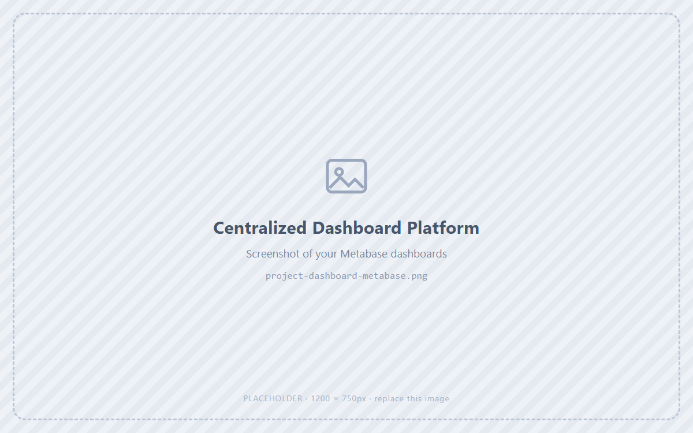

A shared reporting home for the business
The Centralized Dashboard Platform brings business reporting into a common application. Built as Kinboard, it combines dashboard authoring and delivery with ownership, categorization, and audience controls. Employees can discover and open reporting that is relevant to their work without being given direct operational database access.
Metabase supplies saved questions and reporting datasets. Kinboard provides a custom presentation layer where charts, tables, filters, and page layouts can be tailored to the business workflow. Dashboards and news can also be reached through KIN Application Center. Slide playlists extend the platform to shared TV and browser displays, combining dashboards with images and videos.
Make reporting consistent without making every audience identical
A useful reporting platform needs more than a chart. The data must have a clear source and definition, the layout must answer a business question, and access must match the intended audience. Different departments and locations may need different views of related information.
The design separates data preparation, dashboard presentation, and audience management. That allows a dashboard to evolve without confusing its category with its permissions, or treating a link as sufficient authorization.
Key features
- Custom interactive dashboards
Stored HTML dashboard content supports business-specific layouts with charts, tables, and filters. Reporting datasets can come from Metabase saved questions, allowing the presentation to be designed around the decision rather than limited to a standard report arrangement.
- Catalog and categories
My Dashboards, Shared With Me, category badges, and category filters organize the available content. Category administration is kept separate from viewing, and existing assignments remain identifiable when a category is made inactive.
- Ownership and audience management
Dashboard owners and authorized managers maintain sharing with users and departments. Location restrictions refine the applicable access rules. Kinboard checks visibility and active status before returning dashboard content.
- Employee identity and onboarding
Company authentication and HRIS department/location mappings connect reporting audiences with employee information. App Center can register eligible employees as dashboard users after login, preserving existing accounts without automatically granting editor or administrator roles.
- Slide playlists for shared displays
Dashboard, image, and video items can be arranged into published playlists with playback durations and looping. TV or browser players present the sequence, giving operational teams a shared reporting and communication view.
- Remote player controls
Authorized managers can inspect connected browser players and send reload, pause, resume, next, previous, restart, or dashboard-refresh commands. This manages open player sessions rather than identifying or pairing physical displays.
- Targeted news and announcements
Authors publish news for the intended users, departments, and locations, with media attachments and reader read/unread tracking. An active-from time and optional expiry keep reader visibility aligned with the announcement period, alongside publication and audience rules.
- Access from App Center
Employees can browse accessible dashboards, save browser-local favorites, and open dashboards in standard, fullscreen, or new-tab views through the App Center integration.
From a business question to an employee dashboard
The workflow starts with the question a team needs to answer. The reporting layer defines the dataset; the dashboard turns it into a useful working view; sharing determines who receives it.
Different responsibilities, one reporting experience. Metabase provides reusable datasets; Kinboard manages the custom presentation and its audience. The diagram describes the main reporting workflow, not a requirement that every dashboard use the same source.
- Define the reporting dataset
Identify the source, metric definitions, time window, and grouping needed for the business question. Reusable Metabase questions supply the relevant results for the dashboard.
- Build the working view
Create the dashboard’s HTML presentation, bind the dataset fields, and add suitable charts, tables, and filters. Check that displayed totals agree with the source and that filter behavior matches the reporting scope.
- Set ownership and audience
Assign the dashboard’s category, owner, and intended sharing. Apply location restrictions where needed. Categories organize the catalog; they do not replace access checks.
- Deliver and review
Authorized employees open the dashboard in Kinboard or App Center. The reporting view can be refined as business questions and source data change.
Extend the reporting view into communication
A dashboard answers an operational question; a slide playlist keeps selected information visible on a shared screen; news gives an announcement its own audience and publication window. These are complementary delivery paths within the same platform.
Different channels retain different controls. Slide publication governs the player experience; news visibility depends on its audience and active period. Remote commands target connected player sessions.
My contribution
I developed the centralized dashboard platform and its integration with the employee workspace, connecting custom dashboard presentation with company identity, employee mappings, and audience management. I also build interactive reporting views using verified datasets and the platform’s existing dashboard-content workflow.
My work includes category management, user and department sharing, location restrictions, and the App Center delivery path. The platform also brings slide playlist management, remote browser-player controls, and audience-aware news publishing into that shared content environment. A recurring design decision is to keep these concerns separate: a category makes content easier to find, while the access rules decide whether its content can be returned to a particular employee.
For reporting delivery, I check source totals and field meanings before shaping the chart or table. For employee integration, I preserve existing accounts and sharing rather than granting elevated roles simply because someone has successfully signed in.
Architecture with clear reporting and access boundaries
The platform uses an Angular frontend, TypeScript and Express application services, and PostgreSQL with Prisma and Knex for application data. Metabase supplies reporting datasets; custom HTML, CSS, and JavaScript provide the dashboard presentation. Company authentication and employee mappings support the delivery layer.
Content organization does not grant access. Location restrictions refine applicable audience rules; an unrestricted location setting does not by itself make a dashboard available to everyone.
Slide content combines dashboard references with reusable media items. Remote player commands use server-sent events, with player status and acknowledgements returned over HTTP. News uses the same media library and evaluates publication, audience, and active-period rules when readers request content.
The dashboard catalog and dashboard content are separate requests. Listing available dashboards does not need to load each dashboard’s full HTML. Content delivery then applies the relevant account, dashboard, and sharing checks.
Access to a dashboard and access to its data sources are related but distinct responsibilities. An authorized dashboard page still needs an appropriately configured reporting-data path; public data feeds should only be used when their exposure is intentional and authorized.
Outcomes & engineering lessons
The platform creates a common place to deliver reporting while retaining flexibility in how each business view is presented. Metabase datasets support reusable reporting definitions, and Kinboard adds ownership, categorization, sharing, slide-based screen delivery, targeted news, and integration with the employee portal.
The main engineering lesson is to separate discovery, presentation, and authorization. Categories should remain useful without silently granting access; shared reporting should remain convenient without exposing unrelated dashboards; and a custom visual should remain traceable to its underlying data.
This approach supports both consistent reporting and audience-specific delivery without requiring every employee to work directly with database tools.